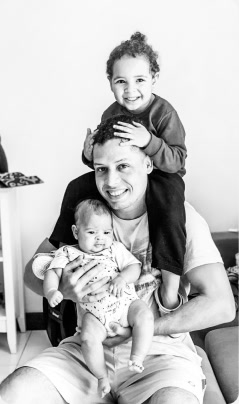
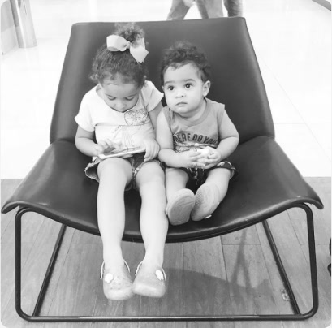
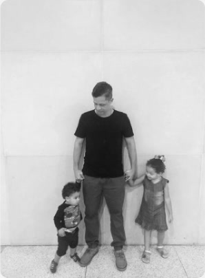

Design creates culture, products, and transforms lives, and I am a part of this transformation. Design cria cultura, produtos e transforma vidas, e eu faço parte dessa transformação.
- FoodComidaBarbecueChurrasco
- ToolFerramentaFigma
- Work musicMúsica para trabalharJazz
- SportEsporteSoccerFutebol
- SerieSérieThe Office
/Figma Icon (Full-color).svg)
About meSobre mim
With extensive experience in the design field, over the last few years, I have been adding and applying knowledge in Interface Design with a theoretical foundation of UX for digital products aligned with brand positioning. As a leader, I managed a team of designers, with my main responsibilities being task management, co-creating with a Design Thinking approach, and validating deliverables. Com ampla experiência na área de design, nos últimos anos venho somando e aplicando conhecimento em Interface Design, com base teórica de UX para produtos digitais alinhados ao posicionamento da marca. Como líder, gerenciei uma equipe de designers, com as principais responsabilidades de gestão de tarefas, cocriação com abordagem de Design Thinking e validação de entregas.
Throughout my career, I have implemented new cultures of digital design processes, using new execution and management. My ambitions are linked to self-awareness, soft and hard skills, with a focus on results, both individually and for the team, always providing a healthy, collaborative, and productive environment. Ao longo da minha carreira, implementei novas culturas de processos de design digital, usando novas formas de execução e gestão. Minhas ambições estão ligadas ao autoconhecimento, soft e hard skills, com foco em resultados, tanto individuais quanto da equipe, sempre promovendo um ambiente saudável, colaborativo e produtivo.
My coursesMeus cursos


